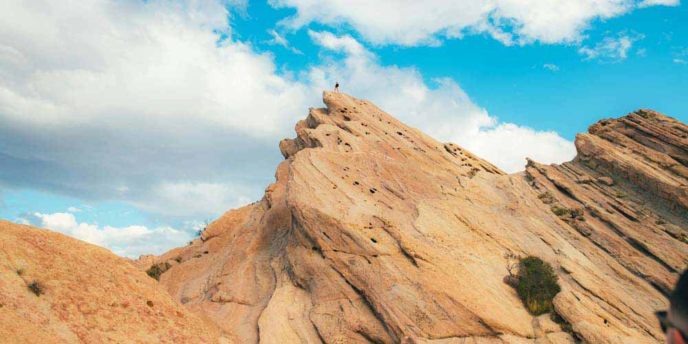

Ashley Currier
About Me
My name is Ashley. I am from Southern California, but I am living in Utah. I enjoy being creative and bicycling with my friends and family. I love going to the beach, boogie boarding and listening to the waves while watching the sunset. Sunsets at the beach are incredible!
California's Geographic Diversity
California is known for its remarkable geographic diversity. It is home to both the highest and lowest points in the contiguous United States: Mt. Whitney, which stands at 14,505 feet, and Death Valley, which lies 282 feet below sea level. Amazingly, these two extremes are only about 80 miles apart!
From Los Angeles, you can experience this diversity firsthand. Travel roughly two hours west, and you’ll find yourself at the beach, enjoying the waves and sunshine. Head about two hours southeast instead, and you can go sledding in the mountains, depending on the season.
Transport to an Alien World
One of the most otherworldly landscapes in California is Vasquez Rocks, located just north of Los Angeles. With its dramatic, jagged rock formations that seem to defy gravity, it feels like an alien world. This striking landscape has made it a favorite for movie makers seeking an otherworldly feel and for families, hikers and geography enthusiasts. I have many memories here.
The rocks, formed by the collision of the Pacific and North American plates, tilt at sharp angles, offering a glimpse into California's geological past and the immense forces that shaped it. Walking through Vasquez Rocks, it's easy to imagine yourself on a different planet entirely.
